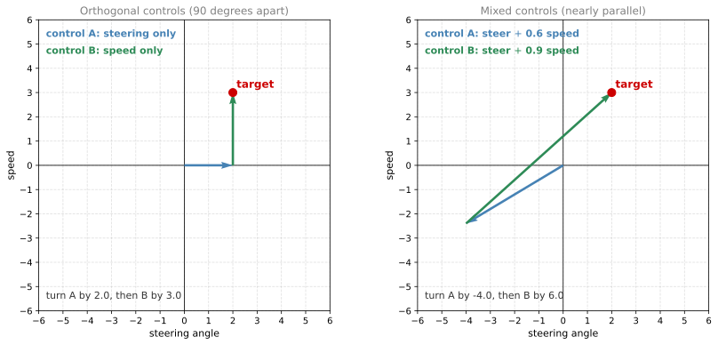
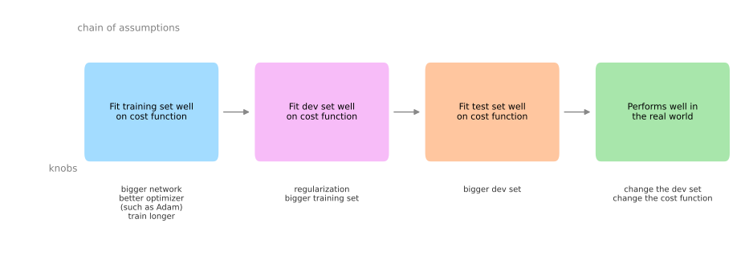

Introduction to ML Strategy
deep-learning
ml-strategy
orthogonalization
Why machine learning strategy matters, and how orthogonalization gives you one knob per problem when tuning a supervised learning system.
This course is about how to structure a machine learning project, that is, about machine learning strategy. The goal is to help you get your machine learning systems working much more quickly and efficiently. Machine learning strategy is also changing in the era of deep learning, because the things you can do with deep learning algorithms are different from what was possible with the previous generation of machine learning algorithms.
Why ML Strategy
Start with a motivating example. Say you are working on your cat classifier, and after working on it for some time you have gotten your system to 90 percent accuracy. That is not good enough for your application. You might then have a lot of ideas about how to improve it.
- Collect more data, more training data.
- Collect a more diverse training set, with images of cats in more diverse poses, or a more diverse set of negative examples.
- Train the algorithm longer with gradient descent.
- Try a different optimization algorithm, such as Adam.
- Try a bigger network, or a smaller network.
- Try dropout, or try L2 regularization.
- Change the network architecture, such as changing the activation functions or the number of hidden units.
When trying to improve a deep learning system, you often have a long list of ideas like this. The problem is that if you choose poorly, it is entirely possible to spend six months charging in one direction only to realize at the end that it did not do any good. Some teams have spent literally six months collecting more data, only to find out afterward that it barely improved the performance of their system.
Assuming you do not have six months to waste on your problem, it would be nice to have quick and effective ways to figure out which of all these ideas, and maybe other ideas too, are worth pursuing, and which ones you can safely discard. That is what this course provides, a number of strategies, meaning ways of analyzing a machine learning problem that point you toward the most promising things to try.
Review Questions
1. Your cat classifier is at 90 percent accuracy and you have seven plausible ideas for improving it. Why is picking one at random a costly decision?
TipAnswer
Because each idea can take months to carry out, and most of them will not help. Teams have spent six months collecting more training data only to find that it barely improved performance. The purpose of machine learning strategy is to tell you, before you commit that time, which ideas are worth pursuing and which you can safely discard.
1. Why does machine learning strategy need to be revisited in the era of deep learning?
TipAnswer
The set of available actions has changed. Deep learning algorithms let you do things that were not possible with the previous generation of machine learning algorithms, such as training much bigger networks or feeding in far more data, so the old rules about which lever to pull no longer apply directly.
Orthogonalization
One of the challenges with building machine learning systems is that there are so many things you could try and so many things you could change, including so many hyperparameters you could tune. The most effective machine learning people are very clear-eyed about what to tune in order to achieve one particular effect. This is a process called orthogonalization.
Television with Well-Designed Knobs
Picture an old school television with a lot of knobs that you can turn to adjust the picture in various ways. On these old TV sets, maybe there was one knob to adjust how tall vertically the image is, and another knob to adjust how wide it is. Maybe another knob to adjust how trapezoidal it is, another to move the picture left and right, another to adjust how much the picture is rotated, and so on.
What TV designers spent a lot of time doing was building the circuitry, often analog circuitry back then, to make sure each of the knobs had a relatively interpretable function. One knob tunes this, one knob tunes that, one knob tunes the other thing.
In contrast, imagine a knob that tunes 0.1 times how tall the image is, plus 0.3 times how wide it is, minus 1.7 times how trapezoidal it is, plus 0.8 times the position of the image on the horizontal axis, and so on. If you turn this knob, then the height of the image, the width, how trapezoidal it is, and how much it shifts all change at the same time. With a knob like that it would be almost impossible to tune the TV so that the picture gets centered in the display area.
So in this context, orthogonalization refers to the fact that the TV designers had designed the knobs so that each knob does only one thing. That makes it much easier to tune the TV so the picture ends up where you want it.
Steering and Speed in a Car
Here is another example. Think about learning to drive a car. A car has three main controls, which are steering, acceleration, and braking. The steering wheel decides how much you go left or right, and the other two control your speed. So really that is one control for steering and two controls for speed. This makes it relatively interpretable what your different actions through the different controls will do to the car.
Now imagine that someone built a car with a joystick, where one axis of the joystick controls 0.3 times your steering angle minus 0.8 times your speed, and a different control gives you 2 times the steering angle plus 0.9 times the speed. In theory, by tuning these two controls you could get your car to steer at the angle and travel at the speed you want. But it is much harder than having one single control for the steering angle and a separate, distinct set of controls for the speed.
Orthogonal means at 90 degrees to each other. By having orthogonal controls that are ideally aligned with the things you actually want to control, it becomes much easier to tune the knobs you have to tune.
Both panels reach the same target. With the orthogonal controls you turn each one by exactly the amount you want in that direction. With the mixed controls you have to turn one control a long way in the negative direction and the other a long way in the positive direction, and the two large adjustments mostly cancel each other out. When a control mixes two effects together, changing both at the same time, it becomes much harder to set the car to the speed and the angle you want.
Chain of Assumptions in Machine Learning
How does this relate to machine learning? For a supervised learning system to do well, you usually need to tune the knobs of your system to make sure that four things hold true.
- You do well on the training set. Performance on the training set needs to pass some acceptability assessment. For some applications this might mean doing comparably to human level performance, though it depends on the application.
- Doing well on the training set leads to doing well on the dev set.
- Doing well on the dev set leads to doing well on the test set.
- Doing well on the test set on the cost function results in the system performing well in the real world, so that you end up with happy cat picture app users, for example.
Each of these four criteria has its own set of knobs, and that is the whole point of orthogonalization.

To relate this back to the TV tuning example, if the picture of your TV was either too wide or too narrow, you wanted one knob to adjust that. You do not want to have to carefully adjust five different knobs that also affect other things. You want one knob that just affects the width of the image.
In a similar way, if your algorithm is not fitting the training set well on the cost function, you want one knob, or maybe one specific set of knobs, that you can use to make it fit the training set well. The knobs you use here are things like training a bigger network, or switching to a better optimization algorithm such as Adam.
If instead you find that the algorithm is not fitting the dev set well, then there is a separate set of knobs. So if your algorithm is doing well on the training set but not on the dev set, you have the set of knobs around regularization that you can use to try to satisfy the second criterion. Getting a bigger training set is another knob that helps your learning algorithm generalize better to the dev set. By analogy, now that you have tuned the width of your TV image, if the height is not quite right, you want a different knob to tune the height, and you want to do that without affecting the width too much.
Having adjusted the width and the height, what if the third criterion is not met? What if you do well on the dev set but not on the test set? If that happens, the knob to turn is to get a bigger dev set. Doing well on the dev set but not the test set probably means you have overtuned to your dev set, so you need to go back and find a bigger dev set.
Finally, if the system does well on the test set but is not delivering happy cat picture app users, then you want to go back and change either the dev set or the cost function. If doing well on the test set according to some cost function does not correspond to your algorithm doing what you need it to do in the real world, it means that either your dev and test set distribution is not set correctly, or your cost function is not measuring the right thing.
Early Stopping Is a Less Orthogonalized Knob
When training a neural network, one technique that is worth singling out is early stopping. It is not a bad technique, and quite a lot of people use it. But it is difficult to think about, because it is a knob that simultaneously affects how well you fit the training set, since stopping early means you fit the training set less well, and it is also often done to improve dev set performance.
So early stopping is one knob that is less orthogonalized, because it affects two things at once. It is like a knob that changes both the width and the height of your TV image. That does not mean it is a bad knob to use, and you can use it if you want. But when you have more orthogonalized controls, the process of tuning your network is much easier.
Diagnose First, Then Turn One Knob
That is what orthogonalization means. Just as with the TV image, it is nice to be able to say that the picture is too wide so you turn this knob, or it is too tall so you turn that knob, or it is too trapezoidal so you turn the other knob. In machine learning, it is nice to be able to look at your system and say which piece of it is wrong. It does not do well on the training set, or it does not do well on the dev set, or it does not do well on the test set, or it does well on the test set but not in the real world. Figure out exactly what is wrong, and then turn exactly one knob, or one specific set of knobs, that solves the problem limiting the performance of your system.
The rest of this course goes through how to diagnose exactly what the bottleneck to your system’s performance is, and how to identify the specific set of knobs you can use to improve that aspect of the performance.
Review Questions
1. What does it mean for a set of controls to be orthogonalized, and why does it make tuning easier?
TipAnswer
Orthogonal means at 90 degrees to each other. Applied to controls, it means each knob affects one thing and only that thing, and the knobs line up with the quantities you actually care about. A knob that mixes several effects, such as 0.1 times the height plus 0.3 times the width minus 1.7 times how trapezoidal the image is, changes everything at once, so no sequence of adjustments reliably gets you to the state you want. With orthogonal knobs, you diagnose the single thing that is wrong and turn the single knob that fixes it.
1. Name the four things that need to hold true for a supervised learning system to do well, in order.
TipAnswer
Fit the training set well on the cost function, then fit the dev set well, then fit the test set well, then perform well in the real world. Each link in the chain is a separate criterion with its own set of knobs.
1. Your model reaches near human level accuracy on the training set and on the dev set, but performance drops sharply on the test set. Which knob does orthogonalization point you toward?
TipAnswer
Get a bigger dev set. Doing well on the dev set but not the test set is the signature of having overtuned to the dev set, so the fix belongs to that link in the chain, not to regularization and not to network size.
1. A model does well on the test set, yet the cat picture app users are unhappy with it. What should you change?
TipAnswer
Either the dev and test set distribution or the cost function. If doing well on the test set according to your cost function does not correspond to the algorithm doing what you need in the real world, then either the data you are evaluating on does not reflect what users actually send in, or the cost function is not measuring the thing you care about.
1. Why is early stopping described as a less orthogonalized knob?
TipAnswer
Because it does two jobs at once. Stopping early makes you fit the training set less well, and at the same time it is usually applied in order to improve dev set performance. One knob therefore moves two of the four criteria, the way a single TV knob that changes both width and height would. It is still a usable technique, but it is harder to reason about than knobs that touch one criterion each.